Change analysis for Chad for PRIMAP-hist v2.6.1_final compared to
v2.6_final
Overview over
emissions by sector and gas
The following figures show the aggregate national total emissions
excluding LULUCF AR6GWP100 for the country reported priority scenario.
The dotted linesshow the v2.6_final data.
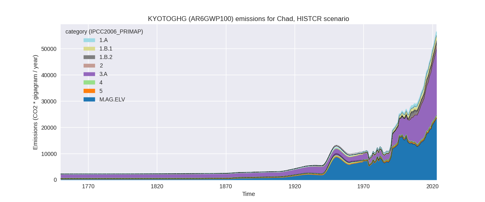
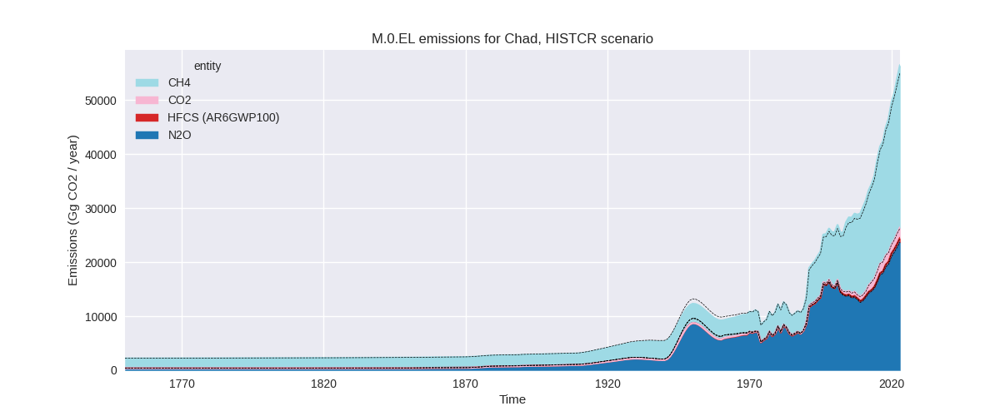
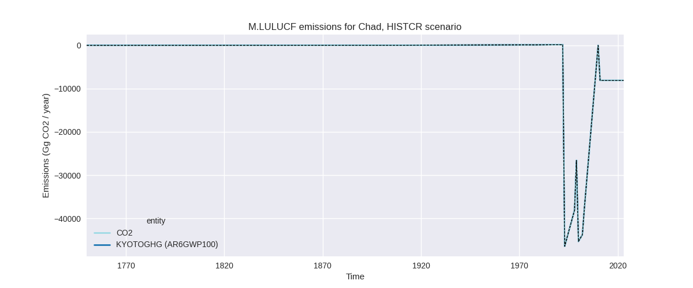
The following figures show the aggregate national total emissions
excluding LULUCF AR6GWP100 for the third party priority scenario. The
dotted linesshow the v2.6_final data.
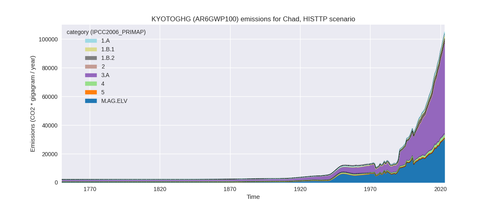
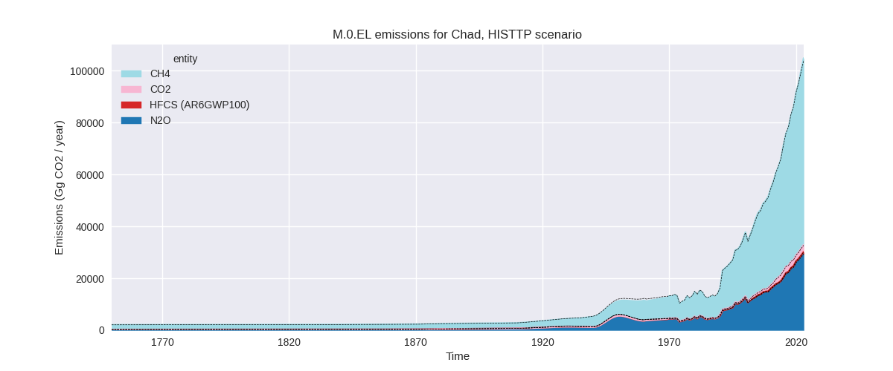
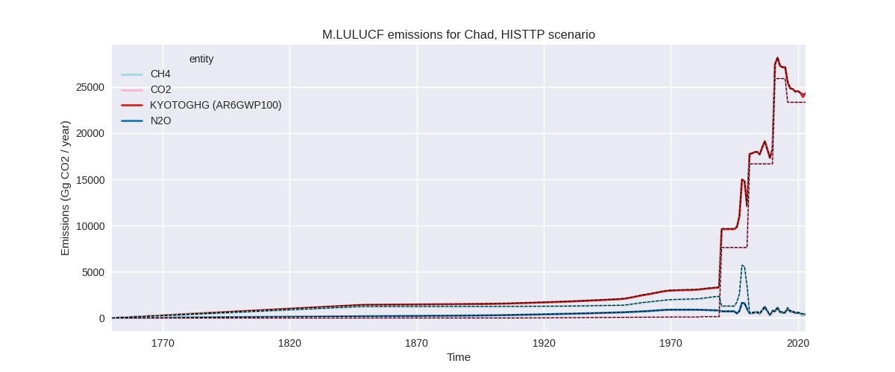
Overview over changes
In the country reported priority scenario we have the following
changes for aggregate Kyoto GHG and national total emissions excluding
LULUCF (M.0.EL):
- Emissions in 2023 have changed by 2.6%% (1419.46 Gg CO2 / year)
- Emissions in 1990-2023 have changed by 2.1%% (658.21 Gg CO2 / year)
In the third party priority scenario we have the following changes
for aggregate Kyoto GHG and national total emissions excluding LULUCF
(M.0.EL):
- Emissions in 2023 have changed by 0.8%% (829.22 Gg CO2 / year)
- Emissions in 1990-2023 have changed by 0.0%% (10.28 Gg CO2 / year)
Most
important changes per scenario and time frame
In the country reported priority scenario the
following sector-gas combinations have the highest absolute impact on
national total KyotoGHG (AR6GWP100) emissions in 2023
(top 5):
- 1: 1.B.2, CH4 with 787.00 Gg CO2 / year (91.1%)
- 2: 1.B.1, CH4 with 635.79 Gg CO2 / year (109.8%)
- 3: 1.A, CH4 with -472.55 Gg CO2 / year (-39.1%)
- 4: 3.A, CH4 with 434.66 Gg CO2 / year (1.7%)
- 5: M.AG.ELV, N2O with 159.36 Gg CO2 / year (0.7%)
In the country reported priority scenario the
following sector-gas combinations have the highest absolute impact on
national total KyotoGHG (AR6GWP100) emissions in
1990-2023 (top 5):
- 1: 1.B.1, CH4 with 521.87 Gg CO2 / year (131.7%)
- 2: 1.B.2, CH4 with 229.85 Gg CO2 / year (36.7%)
- 3: 1.A, CH4 with -117.49 Gg CO2 / year (-13.7%)
- 4: 3.A, CH4 with 24.13 Gg CO2 / year (0.2%)
- 5: 1.A, N2O with -12.75 Gg CO2 / year (-11.0%)
In the third party priority scenario the following
sector-gas combinations have the highest absolute impact on national
total KyotoGHG (AR6GWP100) emissions in 2023 (top
5):
- 1: 4, CH4 with -1118.66 Gg CO2 / year (-39.0%)
- 2: 3.A, CH4 with 1102.83 Gg CO2 / year (1.7%)
- 3: 1.B.2, CH4 with 787.00 Gg CO2 / year (91.1%)
- 4: 1.B.1, CH4 with 635.79 Gg CO2 / year (109.8%)
- 5: 1.A, CH4 with -472.55 Gg CO2 / year (-39.1%)
In the third party priority scenario the following
sector-gas combinations have the highest absolute impact on national
total KyotoGHG (AR6GWP100) emissions in 1990-2023 (top
5):
- 1: 4, CH4 with -672.41 Gg CO2 / year (-38.3%)
- 2: 1.B.1, CH4 with 521.87 Gg CO2 / year (131.7%)
- 3: 1.B.2, CH4 with 229.85 Gg CO2 / year (36.7%)
- 4: 1.A, CH4 with -117.49 Gg CO2 / year (-13.7%)
- 5: 3.A, CH4 with 61.23 Gg CO2 / year (0.2%)
Notes on data changes
Here we list notes explaining important emissions changes for the
country.
- No new country reported data has been included. The total changes in
the CR time-series are higher than in the TP time-series, because the
lower waste CH4 emissions in the TP time-series cancel higher fugitive
emissions which are present in both time-series.
- The reason for the changes is mostly the new EDGAR data.
- The 2023 change in livestock CH4 is very small for the sector but
does have an impact comparable to the fugitive emissions changes because
of the importance of the sector for total country emissions.
Changes by sector and gas
For each scenario and time frame the changes are displayed for all
individual sectors and all individual gases. In the sector plot we use
aggregate Kyoto GHGs in AR6GWP100. In the gas plot we usenational total
emissions without LULUCF.
country reported scenario
2023
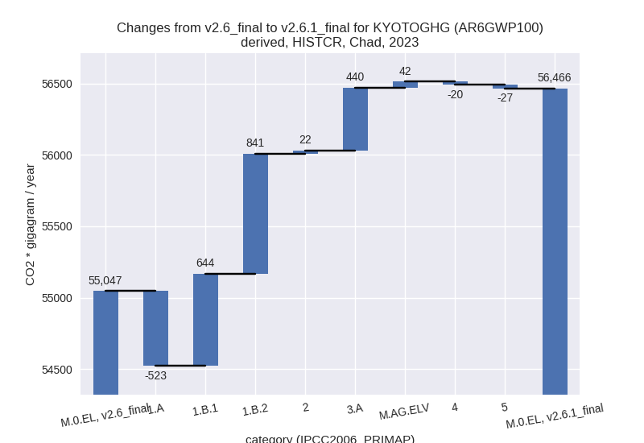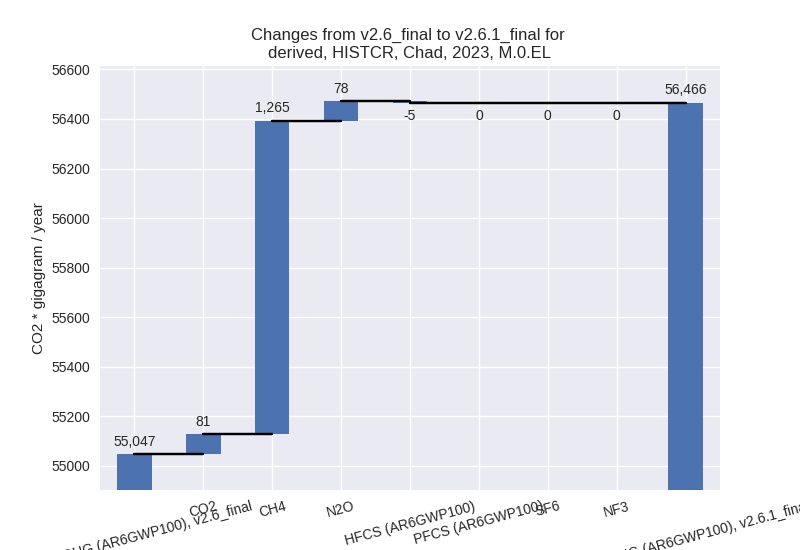
1990-2023
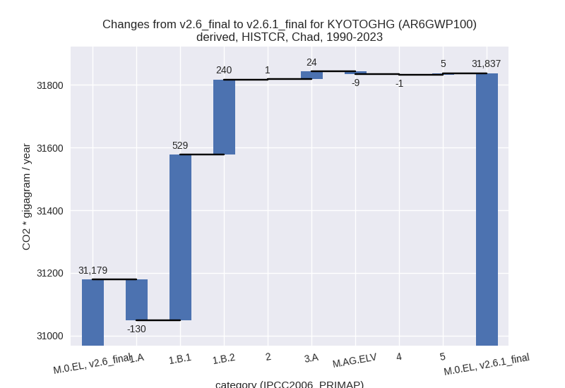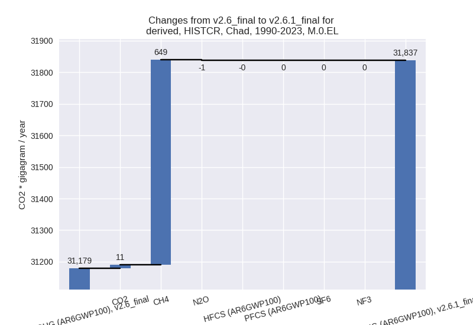
third party scenario
2023
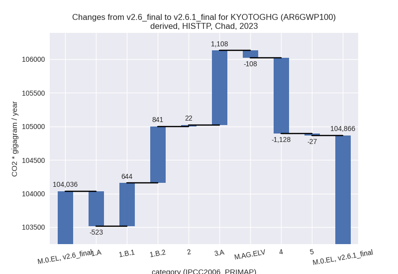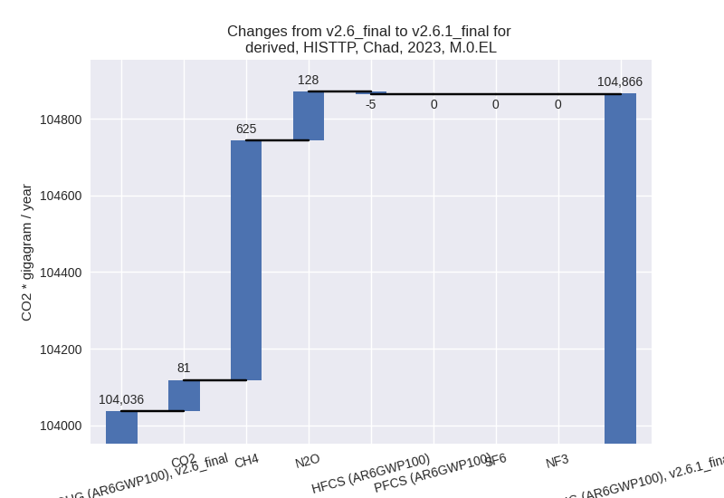
1990-2023
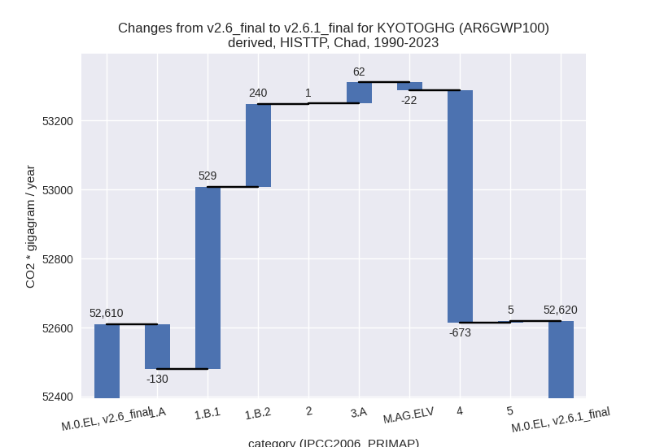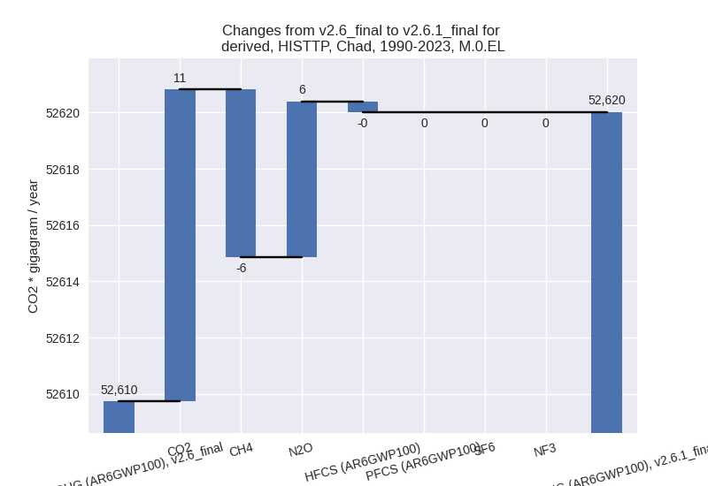
Detailed changes for the
scenarios:
country reported scenario
(HISTCR):
Most important changes
per time frame
For 2023 the following sector-gas combinations have
the highest absolute impact on national total KyotoGHG (AR6GWP100)
emissions in 2023 (top 5):
- 1: 1.B.2, CH4 with 787.00 Gg CO2 / year (91.1%)
- 2: 1.B.1, CH4 with 635.79 Gg CO2 / year (109.8%)
- 3: 1.A, CH4 with -472.55 Gg CO2 / year (-39.1%)
- 4: 3.A, CH4 with 434.66 Gg CO2 / year (1.7%)
- 5: M.AG.ELV, N2O with 159.36 Gg CO2 / year (0.7%)
For 1990-2023 the following sector-gas combinations
have the highest absolute impact on national total KyotoGHG (AR6GWP100)
emissions in 1990-2023 (top 5):
- 1: 1.B.1, CH4 with 521.87 Gg CO2 / year (131.7%)
- 2: 1.B.2, CH4 with 229.85 Gg CO2 / year (36.7%)
- 3: 1.A, CH4 with -117.49 Gg CO2 / year (-13.7%)
- 4: 3.A, CH4 with 24.13 Gg CO2 / year (0.2%)
- 5: 1.A, N2O with -12.75 Gg CO2 / year (-11.0%)
Changes in the main sectors for aggregate KyotoGHG (AR6GWP100)
are
- 1: Total sectoral emissions in 2022 are 5278.00 Gg
CO2 / year which is 9.8% of M.0.EL emissions. 2023 Emissions have
changed by 21.6% (961.76 Gg CO2 /
year). 1990-2023 Emissions have changed by 22.5% (638.43 Gg CO2 / year). For 2023 the
changes per gas
are:
For 1990-2023 the changes per gas
are:
The changes come from the following subsectors:
- 1.A: Total sectoral emissions in 2022 are 2053.99
Gg CO2 / year which is 38.9% of category 1 emissions. 2023 Emissions
have changed by -20.1% (-523.31 Gg
CO2 / year). 1990-2023 Emissions have changed by -8.0% (-130.24 Gg CO2 / year). For 2023
the changes per gas
are:
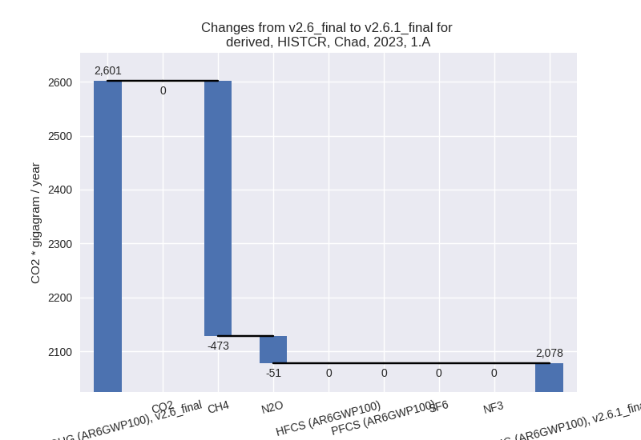
For 1990-2023 the changes per gas
are:
There is no subsector information available in PRIMAP-hist.
- 1.B.1: Total sectoral emissions in 2022 are 1230.96
Gg CO2 / year which is 23.3% of category 1 emissions. 2023 Emissions
have changed by 109.8% (644.22 Gg
CO2 / year). 1990-2023 Emissions have changed by 131.7% (528.79 Gg CO2 / year). For 2023
the changes per gas
are:
For 1990-2023 the changes per gas
are:
There is no subsector information available in PRIMAP-hist.
- 1.B.2: Total sectoral emissions in 2022 are 1993.04
Gg CO2 / year which is 37.8% of category 1 emissions. 2023 Emissions
have changed by 66.8% (840.85 Gg CO2
/ year). 1990-2023 Emissions have changed by 29.8% (239.89 Gg CO2 / year). For 2023 the
changes per gas
are:
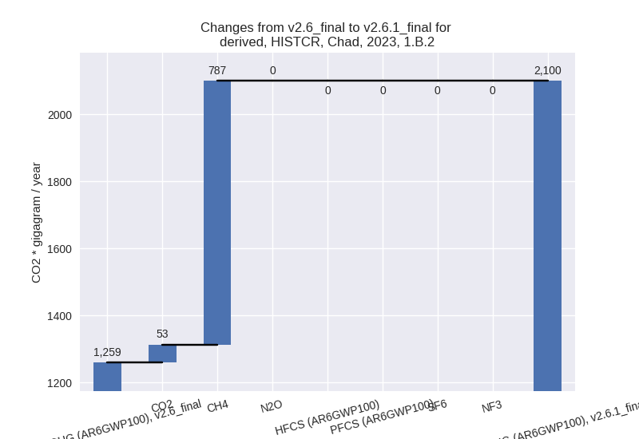
For 1990-2023 the changes per gas
are:
There is no subsector information available in PRIMAP-hist.
- 2: Total sectoral emissions in 2022 are 932.61 Gg
CO2 / year which is 1.7% of M.0.EL emissions. 2023 Emissions have
changed by 2.3% (22.47 Gg CO2 /
year). 1990-2023 Emissions have changed by 0.3% (0.81 Gg CO2 / year). For 2023 the
changes per gas
are:
- M.AG: Total sectoral emissions in 2022 are 46798.66
Gg CO2 / year which is 86.7% of M.0.EL emissions. 2023 Emissions have
changed by 1.0% (481.81 Gg CO2 /
year). 1990-2023 Emissions have changed by 0.1% (15.01 Gg CO2 / year).
- 4: Total sectoral emissions in 2022 are 612.08 Gg
CO2 / year which is 1.1% of M.0.EL emissions. 2023 Emissions have
changed by -3.1% (-20.02 Gg CO2 /
year). 1990-2023 Emissions have changed by -0.3% (-1.31 Gg CO2 / year). For 2023 the
changes per gas
are:
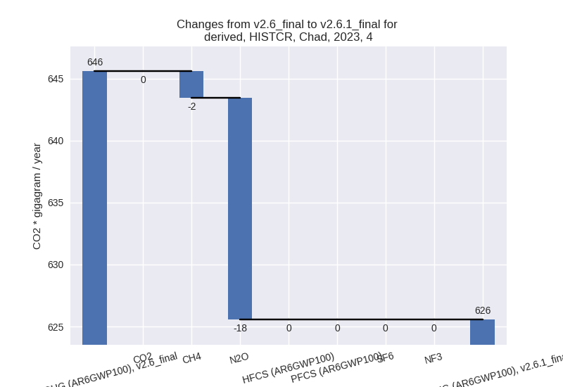
- 5: Total sectoral emissions in 2022 are 342.80 Gg
CO2 / year which is 0.6% of M.0.EL emissions. 2023 Emissions have
changed by -7.3% (-26.57 Gg CO2 /
year). 1990-2023 Emissions have changed by 1.2% (5.27 Gg CO2 / year). For 2023 the
changes per gas
are:
third party scenario (HISTTP):
Most important changes
per time frame
For 2023 the following sector-gas combinations have
the highest absolute impact on national total KyotoGHG (AR6GWP100)
emissions in 2023 (top 5):
- 1: 4, CH4 with -1118.66 Gg CO2 / year (-39.0%)
- 2: 3.A, CH4 with 1102.83 Gg CO2 / year (1.7%)
- 3: 1.B.2, CH4 with 787.00 Gg CO2 / year (91.1%)
- 4: 1.B.1, CH4 with 635.79 Gg CO2 / year (109.8%)
- 5: 1.A, CH4 with -472.55 Gg CO2 / year (-39.1%)
For 1990-2023 the following sector-gas combinations
have the highest absolute impact on national total KyotoGHG (AR6GWP100)
emissions in 1990-2023 (top 5):
- 1: 4, CH4 with -672.41 Gg CO2 / year (-38.3%)
- 2: 1.B.1, CH4 with 521.87 Gg CO2 / year (131.7%)
- 3: 1.B.2, CH4 with 229.85 Gg CO2 / year (36.7%)
- 4: 1.A, CH4 with -117.49 Gg CO2 / year (-13.7%)
- 5: 3.A, CH4 with 61.23 Gg CO2 / year (0.2%)
Changes in the main sectors for aggregate KyotoGHG (AR6GWP100)
are
- 1: Total sectoral emissions in 2022 are 6042.49 Gg
CO2 / year which is 6.0% of M.0.EL emissions. 2023 Emissions have
changed by 18.4% (961.76 Gg CO2 /
year). 1990-2023 Emissions have changed by 19.8% (638.43 Gg CO2 / year). For 2023 the
changes per gas
are:
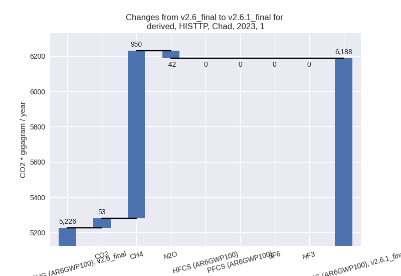
For 1990-2023 the changes per gas
are:
The changes come from the following subsectors:
- 1.A: Total sectoral emissions in 2022 are 2818.49
Gg CO2 / year which is 46.6% of category 1 emissions. 2023 Emissions
have changed by -15.5% (-523.31 Gg
CO2 / year). 1990-2023 Emissions have changed by -6.5% (-130.24 Gg CO2 / year). For 2023
the changes per gas
are:
For 1990-2023 the changes per gas
are:
There is no subsector information available in PRIMAP-hist.
- 1.B.1: Total sectoral emissions in 2022 are 1230.96
Gg CO2 / year which is 20.4% of category 1 emissions. 2023 Emissions
have changed by 109.8% (644.22 Gg
CO2 / year). 1990-2023 Emissions have changed by 131.7% (528.79 Gg CO2 / year). For 2023
the changes per gas
are:
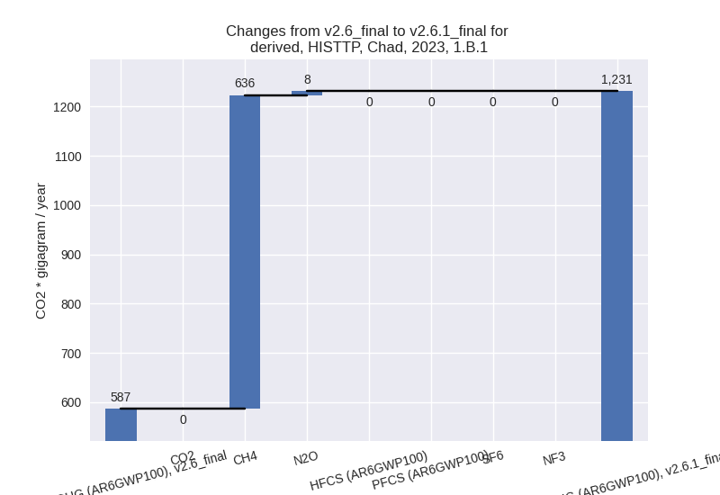
For 1990-2023 the changes per gas
are:
There is no subsector information available in PRIMAP-hist.
- 1.B.2: Total sectoral emissions in 2022 are 1993.04
Gg CO2 / year which is 33.0% of category 1 emissions. 2023 Emissions
have changed by 66.8% (840.85 Gg CO2
/ year). 1990-2023 Emissions have changed by 29.8% (239.89 Gg CO2 / year). For 2023 the
changes per gas
are:
For 1990-2023 the changes per gas
are:
There is no subsector information available in PRIMAP-hist.
- 2: Total sectoral emissions in 2022 are 932.61 Gg
CO2 / year which is 0.9% of M.0.EL emissions. 2023 Emissions have
changed by 2.3% (22.47 Gg CO2 /
year). 1990-2023 Emissions have changed by 0.3% (0.81 Gg CO2 / year). For 2023 the
changes per gas
are:
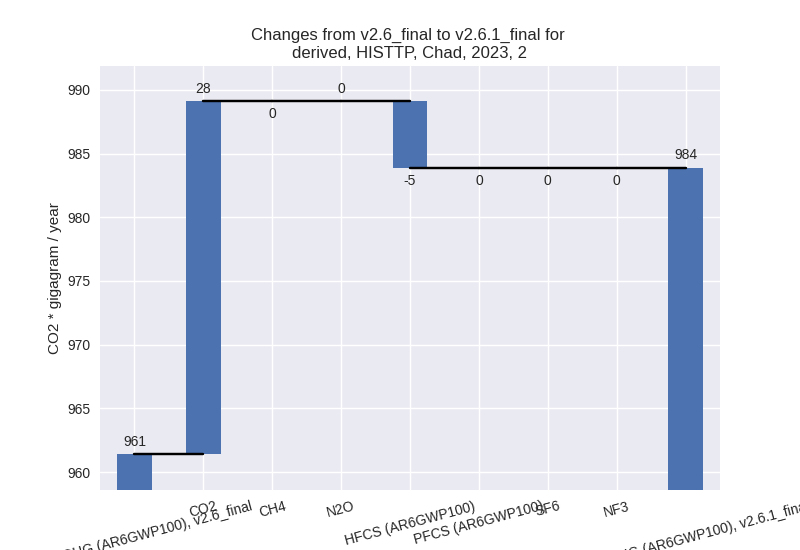
- M.AG: Total sectoral emissions in 2022 are 90871.94
Gg CO2 / year which is 90.8% of M.0.EL emissions. 2023 Emissions have
changed by 1.1% (999.66 Gg CO2 /
year). 1990-2023 Emissions have changed by 0.1% (39.13 Gg CO2 / year).
- 4: Total sectoral emissions in 2022 are 1922.76 Gg
CO2 / year which is 1.9% of M.0.EL emissions. 2023 Emissions have
changed by -36.4% (-1128.12 Gg CO2 /
year). 1990-2023 Emissions have changed by -35.7% (-673.37 Gg CO2 / year). For 2023
the changes per gas
are:
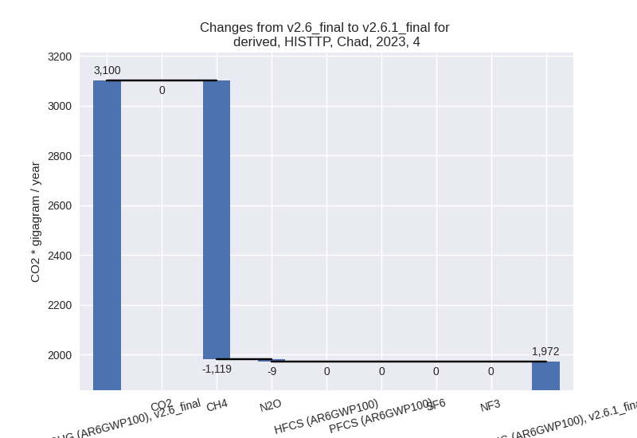
For 1990-2023 the changes per gas
are:
- 5: Total sectoral emissions in 2022 are 342.80 Gg
CO2 / year which is 0.3% of M.0.EL emissions. 2023 Emissions have
changed by -7.3% (-26.57 Gg CO2 /
year). 1990-2023 Emissions have changed by 1.2% (5.27 Gg CO2 / year). For 2023 the
changes per gas
are:
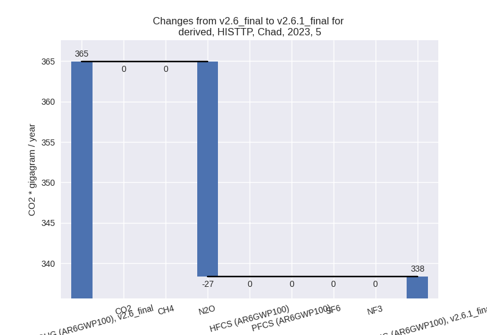